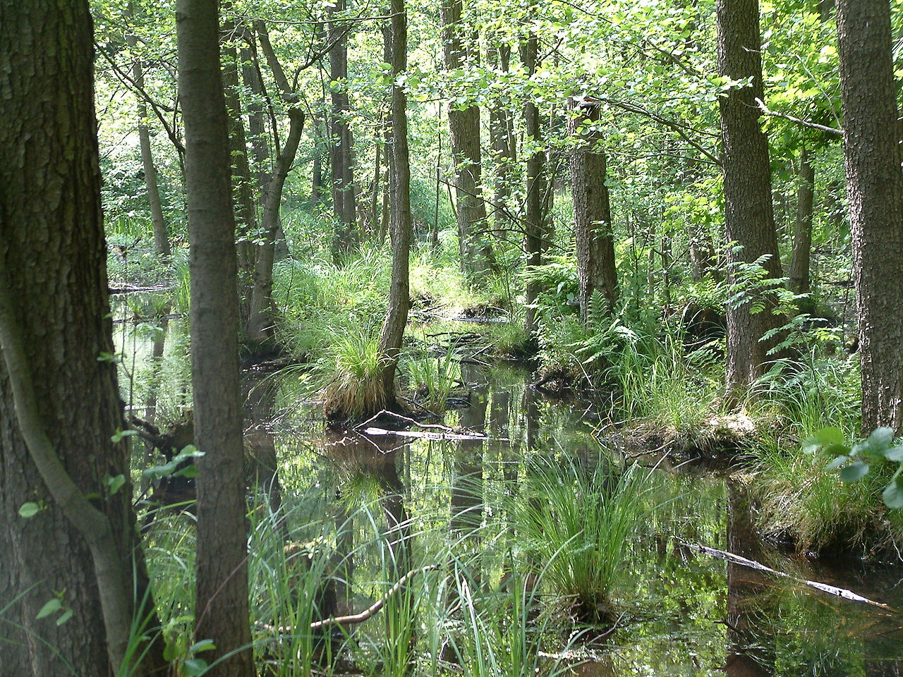

Dumbrājs aug auglīgās, bet pārmitrās, kūdrainās augsnēs. Kokaudzi galvenokārt veido melnalkšņi kopā ar bērziem. Pamežs ir vidēji biezs, tajā aug krūkļi, kārkli, ievas un zalktenes. Zemsedzē aug mitrumu mīloši augi – grīšļi, papardes, purenes un vīgriezes.

Avots: lv.wikipedia.org